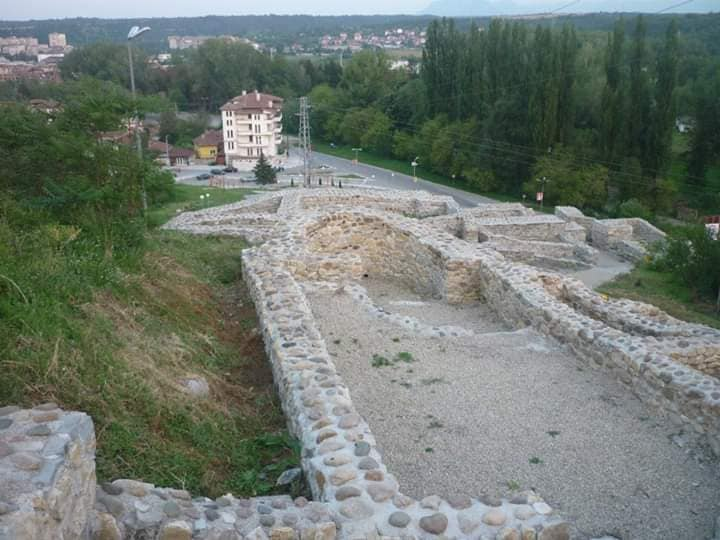

Крепост "Диана"
Крепостта край град Монтана - Кастра ад Монтанезиум, се намира в северозападния край на града, на хълма Калето. Хълмът е обект на множество археологически проучвания, които разкриват ценна информация за историята на град Монтана. Името на града е дадено от древните римляни и вероятно идва от думата Монс - планина, но самото селище води началото си още от праисторически времена. Първите обитатели на хълма са живели през каменно-медната епоха. През този период от историята хората правят важен преход от ловци-номади към по-уседнал начин на живот, свързан с обработване на земята и строеж на постоянни селища. Местността, която по-късно е наречена Монтана, е избрана като подходящо място за живот от древните хора заради плодородните почви и възможността за защита. Това сочат откритите при разкопки жилища от този период. По-късно мястото обитават древните траки. Тракийското племе трибали населява хълма до около І век пр.н.е. Те построяват крепост за защита от нападатели. От нея са останали каменни зидове, широки повече от метър.
Римляните се заселват в района в края на І в. н.е., привлечени от богатите залежи на руда и злато по поречието на река Огоста. Те завладяват тракийската крепост и я използват за свои нужди. В този период Монтана се превръща в град – център на провинция Долна Мизия, в който постоянно пребивават военни части. По времето на Римската империя градът процъфтява. Изграждат се и се поддържат пътища, свързващи Монтана с останалата част на империята. Освен рудодобив и златодобив, основни поминъци по това време са земеделието и занаятчийството.